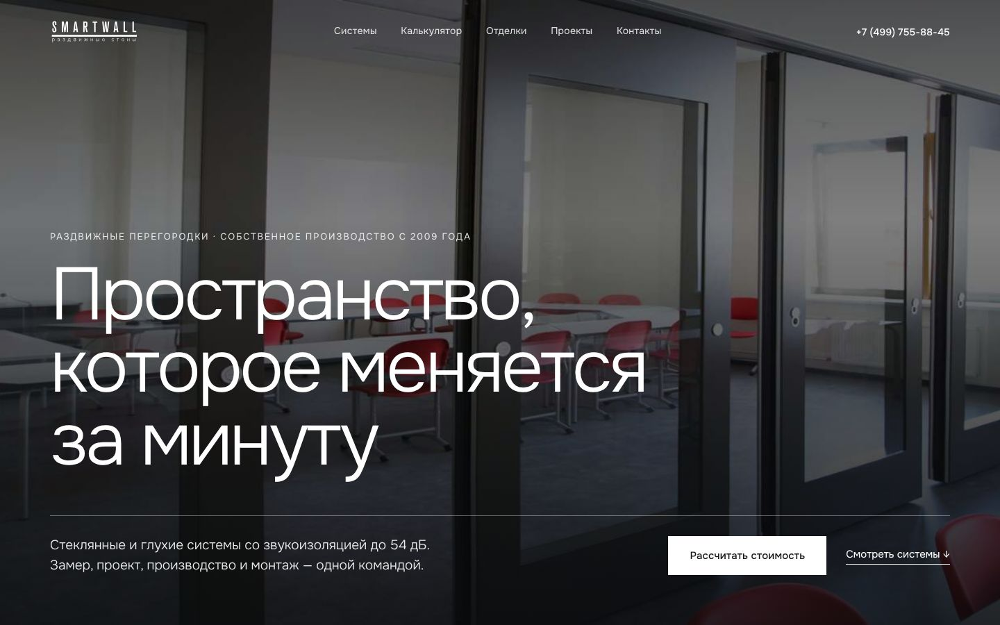

Одна и та же главная страница в трёх разных образах. Содержимое одинаковое: герой, ключевые цифры, каталог с ценой, сроком, гарантией и звукоизоляцией, калькулятор-ориентир, отделки, проекты, процесс, заявка. Метки уточнить — данные, которые должна подтвердить компания.

Направление A
Архитектурный минимализм
Крупные фото объектов, белый и графит, один синий акцент из логотипа. Каталог — как строгая таблица.
Шрифт: Onest (лёгкий, заголовки 300)
Плюс: выглядит дорого, максимально далеко от синего и золотого Foldin
Риск: нужны крупные качественные фото (почти все сейчас 360–930 px)
Направление A как основа (строгий и дорогой образ, подходит главной аудитории: офисы и бизнес-центры), блок «Отделки» взять из B, а таблицу сравнения звукоизоляции и схему трека — из C. Всё это уже есть в трёх макетах и может быть собрано в один.